Most contents come from https://developer.apple.com/videos/play/wwdc2018/415
The new building system introduced in Xcode 10 is written by Swift from scratch, and brings lots of improved performance and reliability. So what happens when we press CMD + B in Xcode?
In general, Xcode has to do tasks like preprocess source files and compile them by compiler, link source code by linker, copy and process resources like headers, asset catalogues and storyboards, And finally code sign and maybe even do some custom work in a shell script or a make file like building API documentation for your framework or running code linting and validation tools.

Build Task dependency and execution order
Building tasks are executed in a particular order.
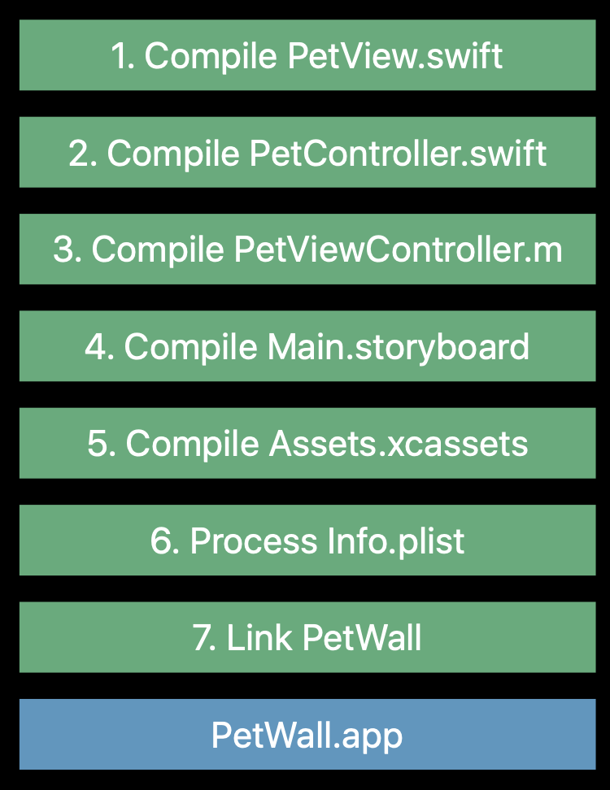
The building system use the dependency information to determine which tasks should be run and what task can be run in parallel. This is called dependency order.
We know that a compiler can produce .o files from .m files. Then a linker consumes a number of object files and produces executable or library output. The following graphic shows the dependency info between compilation and linking tasks.
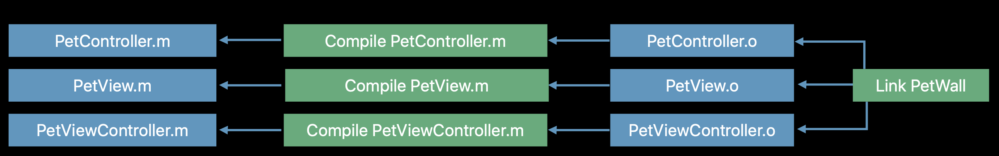
Build tasks are executed in dependency order
- The building system will process the project and represented building tasks as a Directed Graph
What happens when you press build? So the first step is for the build system to take the build description, your Xcode project file.Parse it, take into account all the files in your project, your targets and the dependency relationships.Your build settings, and turn it into a tree-like structure called a directed graph.
And this represents all the dependencies between the input and output files in your project and the tasks that will be executed to process them.

Then the low-level execution engine get the dependency specifications from the above graph and figures out which tasks to execute.

Discovered Dependencies
When clang compile PetController.m source file into object file, PetController.d file is also generated, which contains a listing of information about which header files were included by that source file. Next time you build, if you change any of the header files that PetController.d includes, the building system will recompile PetController.m.
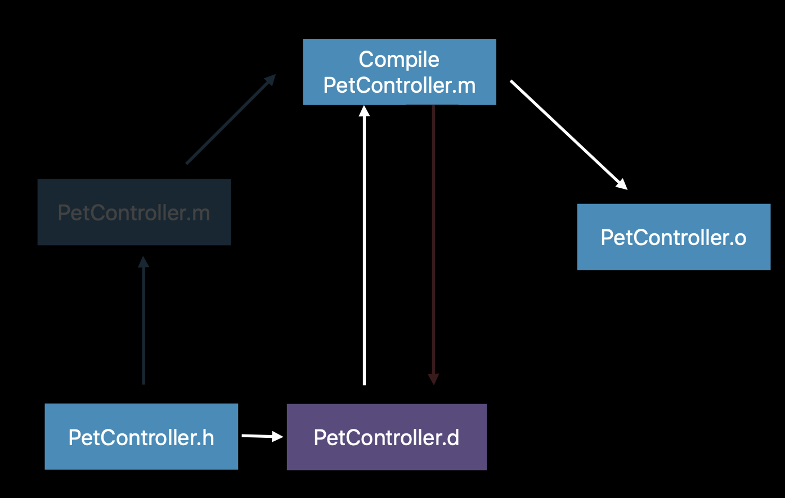
Incremental builds
Having accurate dependency information is very important in order for incremental builds to work correctly and efficiently, in this case, the build system only execute a subset of the tasks on the building tasks graph
how does the build system actually detect changes?
- Each time in the building graph has a signature, which computed from stat info of inputs and other task metadata.
- Building system tracks signatures of current and previous build, and compared them to determine whether a task should be run.
For example, in the following picture, building system only has to run these 3 highlight tasks when only PetViewVontroler.m changed
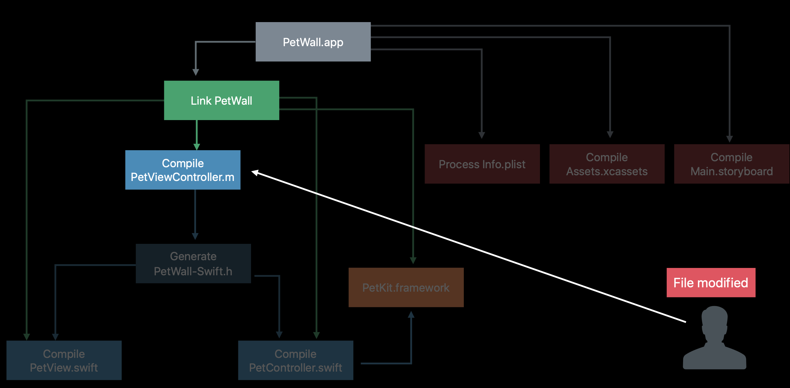
How can we help the build system?
The answer is to handle the dependency properly so that the build system can order tasks correctly and build in parallel to save time.
Where do dependencies come from?
Built in. The build system ships with rules for the compiler, the linker, the asset catalogue and story board processors and so on.
And these rules define what kind of files are accepted as inputs as well as what outputs are produced.Target dependencies, which roughly determine the order in which targets are built.

Implicit dependencies
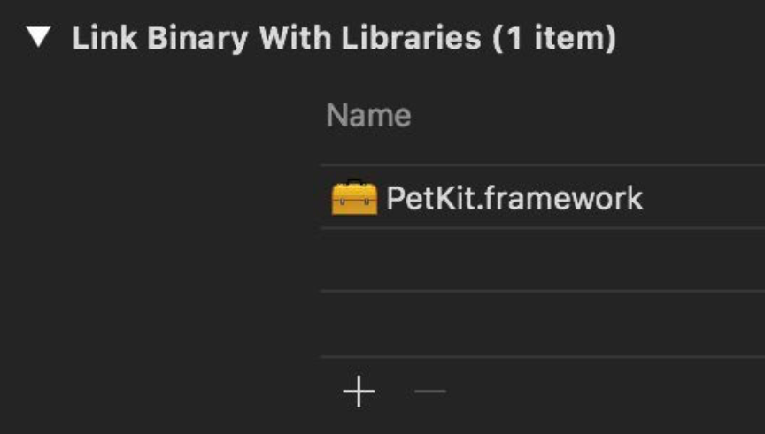
Build phase dependencies. The tasks associated with each of these phrases are usually running groups according to the order in which the phases are listed. But the build system might ignore that order if it knows better.
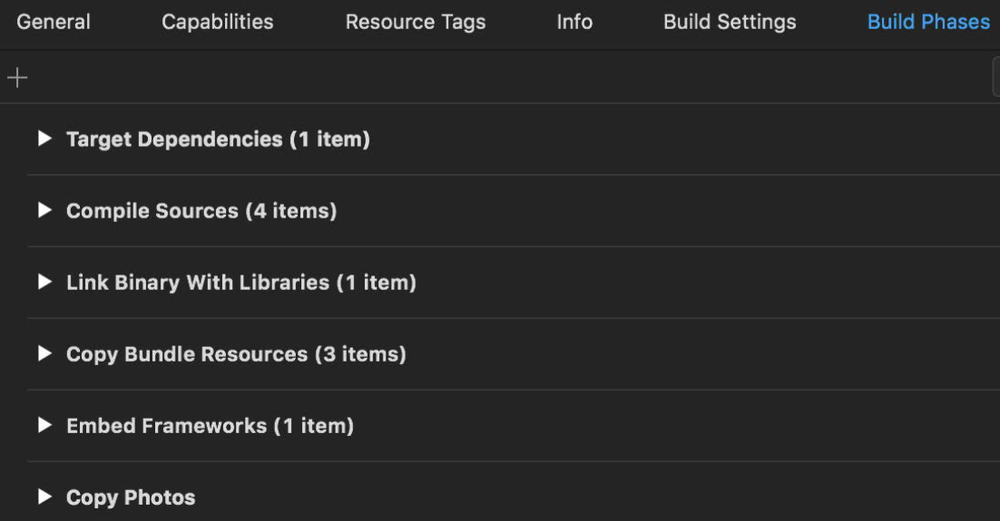
Scheme order dependencies.
If you have the parallelize build check box enabled in your scheme settings, you get better build performance and the order of your targets in your scheme doesn’t matter. However, if you turn parallelize build off, Xcode will attempt to build their, your targets in the order you listed them in the build action of the scheme one by one.

What we can do?
Declare inputs and outputs to help the build system avoid rerunning the script tasks unnecessarily
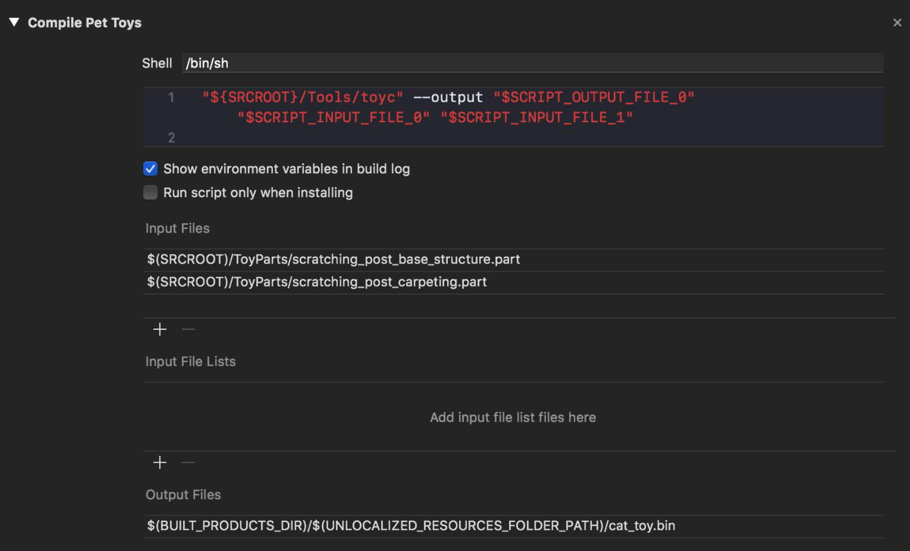
Avoid Auto-link for project dependencies.
This setting allows the compiler to automatically link to the frameworks corresponding to any modules you import without having to explicitly link them in your link library’s build phase. However, it’s important to note that auto-link does not establish dependency on that framework at the build system level. So it won’t guarantee that the target you depend on is actually built before you try to link against it.

Add explicit dependencies
- You might also need to create project references by dragging and dropping another Xcode project into your project’s file navigator in order to reveal the targets of other projects you depend on.
Clang compiler
Header map
Header mapis used by the Xcode build system to know where the header files are.
In Objective-C, a header file is a promise, saying that the implementation exists somewhere else. If you only update the header file, adding a new function A, without implementation of the function in m file, you broke your promise. Then you use function A in class B. This doesn’t break during compile time, because compiler trusts the promise, saying that there is a function A symbol exists, but during link, we usually got symbol undefined error.
1. How does Clang find your header files?
We can copy the arguments from the Xcode building log when Clang compiles a single .m file, then using command line to see more details.
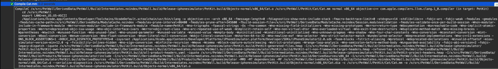
1 | clang <list of arguments> -c Cat.mm -o Cat.o -v |
First, Clang will start searching the header in header map files.

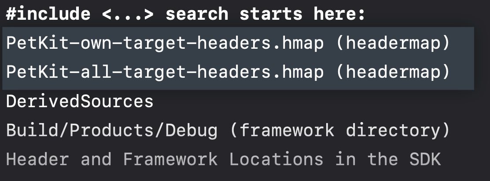
What are header maps
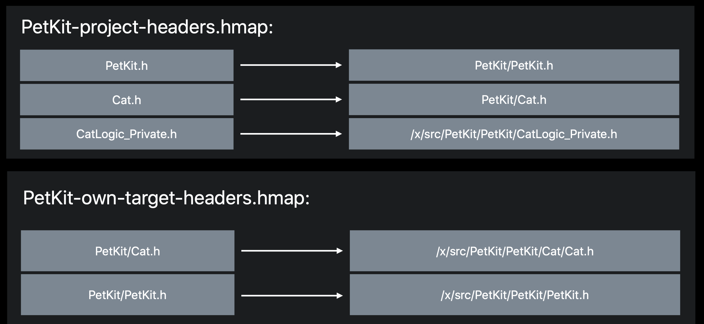
In the header map, for the first two keys PetKit.h and Cat.h , it just simply append the framework name, make them as PetKit/PetKit.h and PetKit/Cat.h. This keep existing projects working when you use import <Cat.h> or import Cat.h, but there might be issues down the road with Clang modules. So it is recommended that you always specify the framework name when you include a public or private header file from your own framework.
Suggestion for importing headers explicitly in your source code to help Clang find the header:
- Always explicit a framework name when you introduce a public and private header
- always add the header to the project
- Always use unique name for header avoid shadowing other headers
2. How does Clang find system header files?
Headermap is only for developers’ code. So, in the case of finding system header files, Clang focus on two directories.
1 | $(SDKROOT)/usr/include |
Take import <Foundation/Foundatoin.h> as an example, Clang appends Foundation/Foundation.h to the (SDKROOT)/usr/includ, and search the header in this path.
1 | $(SDKROOT)/usr/include/Foundation/Foundation.h |
If it doesn’t find the header under $(SDKROOT)/usr/include , it continues to find header file in framework directory.
1 | $SDKROOT/System/Library/Frameworks/Foundation.framework/Headers/Foundation.h |
Process your file
Xcode -> Product ->. Perform Action -> Preprocess “”. This is the action to create preprocessed file for us, where the import ... statement is substituted with the contents of that file.
1 | #import <Foundation/Foundation.h> |
Clang has to find and process over 800 header files for this single include statement. That’s over 9 megabyte of source code that has to be parsed and verified.
After preprocessing:
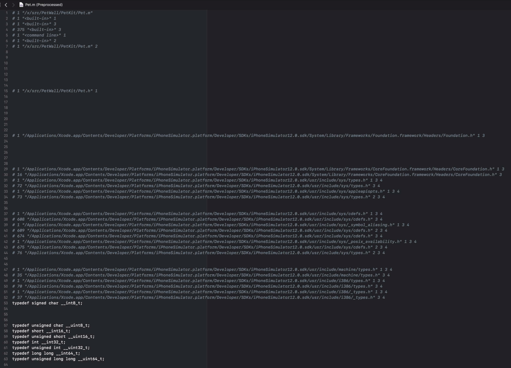
How does Clang do to avoid these redundant and heavy job?
Clang module
To speed up the building, by using module, Clang can parse the header only once and store the information in the disk, then reuse the cache next time.
In order to achieve this, Clang module should have properties.
Context-free
ignore the context-related statement. Like, macro definitions

Self-contained
have to specify all the dependencies.
Module Map
A Module Map describes how a certain set of header files translate onto your module.
This is the module map file for Foundation.framework.

It obviously describes what is the name of the module which is, Foundation.
it also specifies what headers are part of this module.
Foundation.his a umbrella header. If you want to findNSStringheader, you have to look intoFoundation.hfile.
Build Module
While building the foundation module, we have to build its dependency too.

Module Cache
1 | $ clang -fmodules —DENABLE_CHINCHILLA=1 ... |
The command line arguments for building a module can affect the content of your module. Clang will hash all those arguments and store the modules we created for this particular compiler invocation in a directory matching that hash.

How about Swift
When compiling Objective-C files, the compiler compiles each file separately and in parallel, by process the import statement, and then compiling the file. As we know, unlike Objective-C, Swift doesn’t have headers. So First, the compiler has to find declarations both within the Swift target and also coming from Objective-C. Further, it has to generate interfaces describing the contents of the file.
Finding declarations
Within a Swift target
In the following example, the compiler will check the type in the
PetView‘s initializer ‘, firstly, it parses thePetViewand knows the declaration of the initializer is well formed. And then, it checks the call inside the PetViewController`.
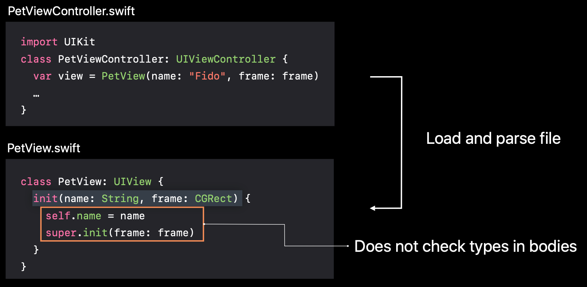
So, actually, when compiling one Swift file, the compiler will parse all the other Swift files in the target. When compiling files separately and in parallel, it causes repeated parsing all files to find declarations.
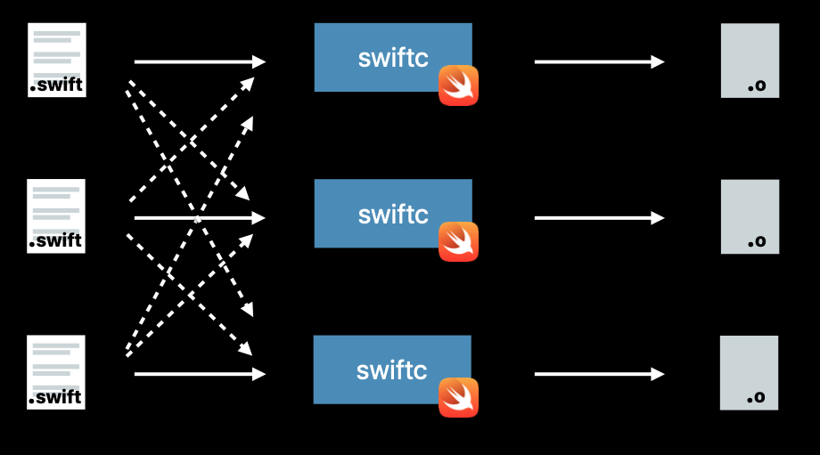
In order to improve performance, Xcode 10 combines the files into groups to reuse parsing within a group, and only repeat parsing across groups.
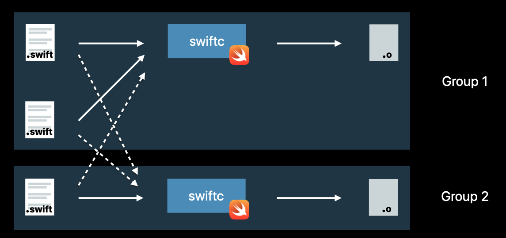
Find declarations from Objective-C
In fact,
Swiftccompiler embedsclang, so we can can import clang frameworks directly- In any target, when you import an Objective-C framework, the importer finds declarations in the headers exposing Clang’s module map for that framework.
- Within a framework that mixes Swift and Objective-C code, the importer finds declarations in the umbrella header.
- Within applications and unit test bundles, you can find declaration from the target’s bridging header.
Generating interface
How your Objective-C header will be imported into Swift
In this
PetViewController.h, you use the button in the top-left corner of the source editor, seegenerated interface.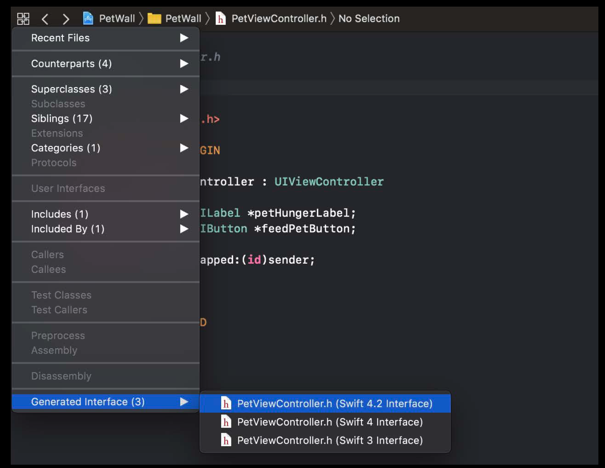
To use Swift in Objective-C
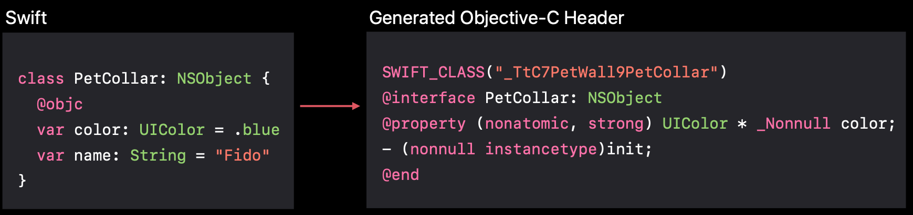
- For classes extending NSObject and methods/properties marked
@objc - Apps and unit tests: both public and internal declarations
- Frameworks: Only
public declarations - Compiler ties Objective-C class to mangled Swift class name. The Objective-C name includes the module name
PetWall. This is to prevent conflict when two modules define class with same name - You can also use
@objc(Name) to provide custom name — but must not conflict!
- For classes extending NSObject and methods/properties marked
To use Swift in other Swift targets
Must firstly import other modules to see their declarations, because in Swift, a module is a distributable unit of declarations.
Can import Objective-C modules.
In Xcode each
Swift targetproducesa separate module, so your app target does.
swfitmodule vs header
swfitmodule file is serialized, binary representation of module’s declarations, which will be deserialised by compiler to check the types when you use them. So this swfitmodule is a bit like like a generated Objective-C header. But instead of text, it’s a binary representation. Besides, it does include the names and types of private declarations so that we can refer to them in the debugger. In addition, it includes the bodies of inlineablefunctions, likestatic inline function`s in Objective-C header


For incremental builds, the compiler produces partial Swift module files and then merges them into a single swift module file, and a single Objective-C header.
In summary:
- Swift uses Objective-C declarations by Bridging header.
- Objective-C uses Swift declarations by Generated header.
- In Objective-C Clang find where the header file is by header map files.
- In Swift,
swfitmoduleis a bit like like a generated Objective-C header
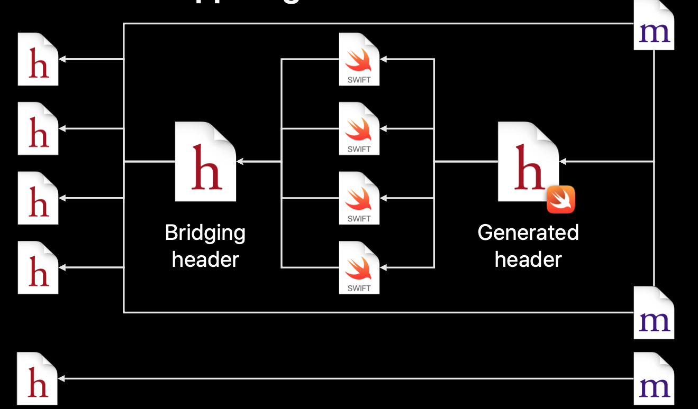
Linker
What is Linker?
Linking is the final task in building an executable Mach-O. What it does it to combine the output of all compiler invocations into a executable.
Take two kinds of input files
- Object files (
.o) - Libraries (
.dylib,tbd,.a)
Symbols
A symbol is a name for a fragment of code or data, which may reference other symbols.
Symbols can have attributes on them that alter the linker’s behavior, like
Weak symbols.Languages often encode data into a symbol
manglingthe symbol
weak symbols
Object Files
Object file, .o file is the output of individual compiler actions. A non-executable Mach-O file containing code and data fragments.
- Each fragment is represented by a symbol.
- Fragment may reference
undefinedsymbol.
Libraries
Libraries define symbols that are not built as part of your target
Dylibs: Dynamic libraries
- Mach-O file that exposes code and data fragments for executables to use. Those are distributed as part of the system, and a number of you also use your own frameworks
TBDs: Text Based Dylib Stubs
Only contains symbols.
- a stub dylib where we delete the bodies of all of the symbols and we just have the names.
- a textual representation of them that are easier for us to use
1
2
3
4
5
6
7
8
9
10
11
12
13
14---
archs: [ armv7, armv7s, arm64 ]
platform: ios
install-name: /usr/lib/libsqlite3.dylib
current-version: 216.4
compatibility-version: 9.0
exports:
- archs: [ armv7, armv7s, arm64 ]
symbols: [ __sqlite3_lockstate, __sqlite3_purgeEligiblePagerCacheMemory,
__sqlite3_system_busy_handler, __sqlite_auto_profile,
__sqlite_auto_profile_syslog, __sqlite_auto_trace,
__sqlite_auto_trace_syslog, _sqlite3OsShmHasMultipleLinks,
_sqlite3OsShmRenamedWhileOpen, _sqlite3OsShmWasTruncated,
_sqlite3OsShmWasUnlinkedWhileOpen, _sqlite3VersionNumber,from stackoverflow
Static archives
- An archive of multiple
.ofiles built with the archive tool.artool. ar - It ends with
.asuffix, and is something like ZIP or TAR archive. - Only the
.ofiles with symbols you reference are included in your app
see more here
- An archive of multiple
Example
The left side is the source, the right side is the object file.
Firstly, let’s look at the purrFile variable, it is static , and nonexported name. So it doesn’t appear in the object file.
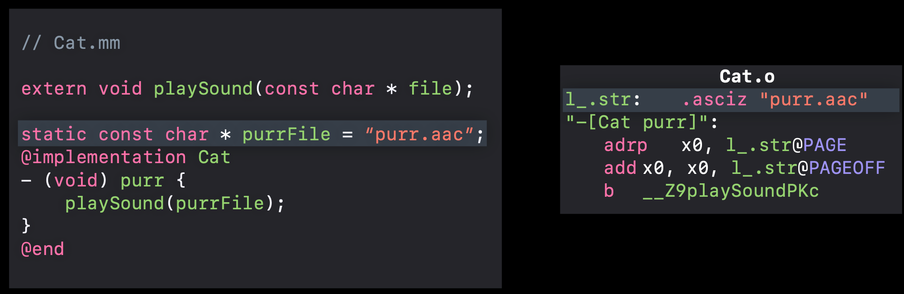
Then, here comes an actual symbol -[Cat purr].
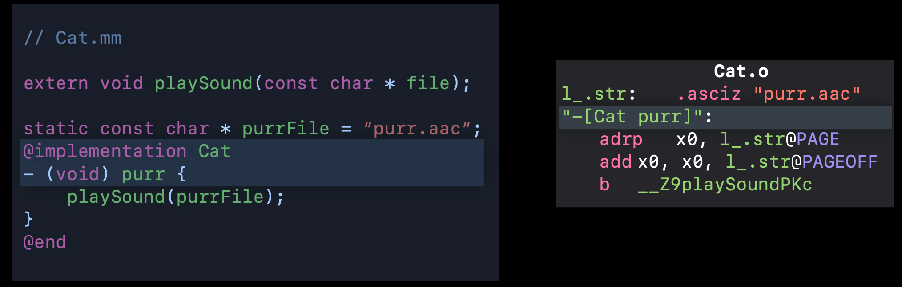
Then, we see two instructions to pass the variable purrFile into playSound function. It is because, we don’t have concrete address for purrFile and we don’t know where this string is going to end up in the final executable. But in ARM64, it could take at most two instructions.
So the compiler leaves the symbolic values PAGE and PAGEOFF that the linker will come in and fix up later.
Finally, we’ve loaded that string into register x0 .
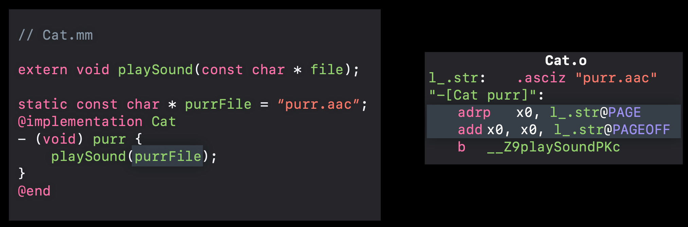
__Z9playSoundPKc is a C++ demangle symbol
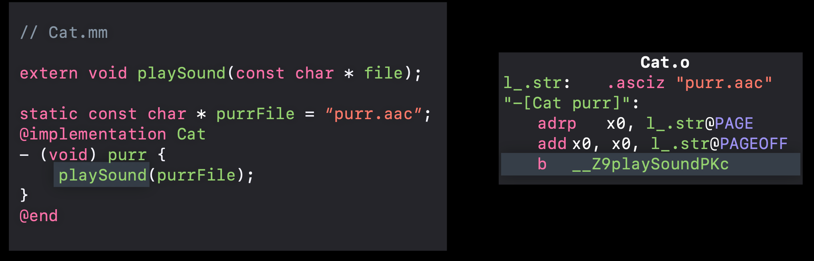
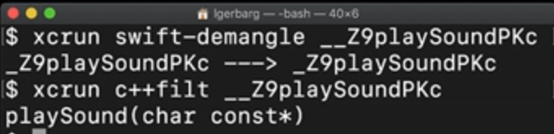
When linking, linker takes a number of object files as input, and create a file to put them in. In the __TEXT segment, it copies the executable code from the object file. Then, in another segment, it copy the string. Now, the linker knows the absolute addresses of the string symbol, it will rewrite the instruction using a specific address. Meanwhile, the second instruction just went away, it replaced it with a null instruction that does nothing. nop

Then the linker has to resolve the undefined symbol, __Z9playSoundKc.
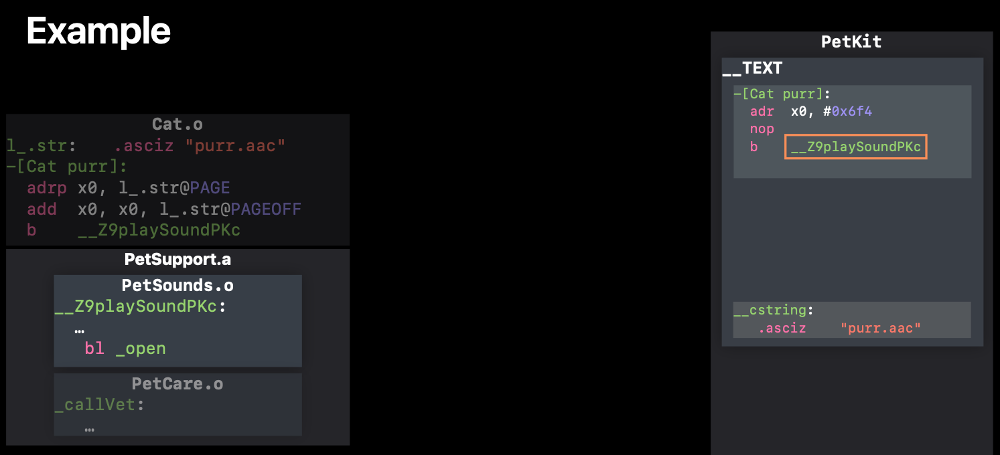
We start looking through the .o file in the .a archive file, and found out matching symbol for playSound. Then, linker put this symbol into the PetKit. While copying code, it rewrite_open symbol as _open$stub. Why? because _open is in the lib system TBD file, which means it is in the system library. The linker needs to put more information in the Application executable file to make it call this function properly.
So, it makes a fake function, _open$stub , where it actually loads from the$open pointer and jumps to it.


若你觉得我的文章对你有帮助，欢迎点击上方按钮对我打赏
扫描二维码，分享此文章